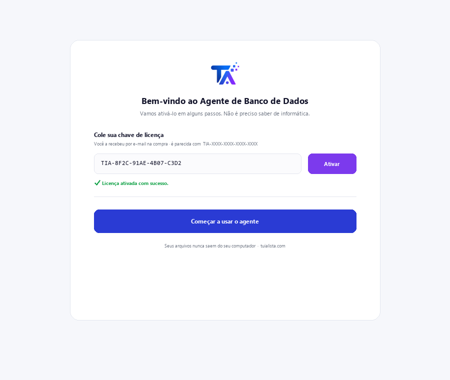
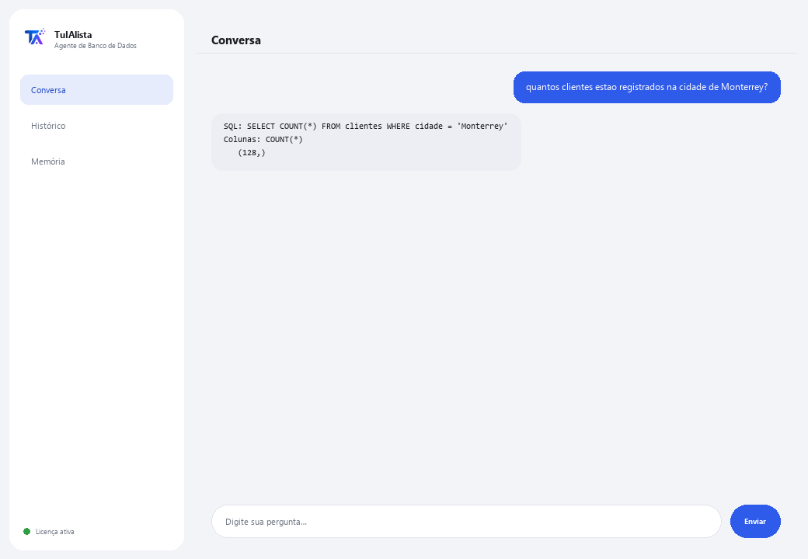

Agente de Banco de Dados
Transforma suas perguntas em consultas ao seu banco de dados, sem você precisar saber SQL. Somente leitura: nunca modifica nem danifica seus dados.
O que resolve e o que você precisa?
Em muitas empresas, os dados importantes vivem em um banco de dados, mas só a área técnica sabe consultá-los. Toda vez que alguém precisa de um número, tem que pedir para o TI escrever uma consulta e esperar. Este agente traduz sua pergunta em uma consulta SELECT e mostra o resultado — sem risco de danificar nada.
- Você precisa: sua chave de licença (TIA-XXXX-XXXX-XXXX-XXXX) e os dados de conexão do seu banco (SQLite, PostgreSQL ou MySQL). Configuração técnica — normalmente feita pela sua equipe de TI.
- Primeiro resultado: instala, ativa sua licença, configura a conexão e pergunta diretamente em linguagem normal — não há comandos para aprender.
- Seu banco de dados nunca sai da sua infraestrutura — a conexão e as consultas rodam localmente.
soporte@tuialista.com ou acesse tuialista.com/soporte — normalmente respondemos no mesmo dia útil.1 O que este agente faz
Você diz a qual banco de dados se conectar e depois pergunta em linguagem normal:
- Traduz sua pergunta em uma consulta SELECT (somente leitura) e executa.
- Mostra a consulta SQL que gerou e o resultado.
- Nunca executa operações que modifiquem dados (INSERT, UPDATE, DELETE, DROP...): um validador de segurança bloqueia qualquer consulta que não seja de leitura.
- Funciona com SQLite, PostgreSQL e MySQL (SQLite já vem pronto; MySQL e PostgreSQL exigem instalar seu extra).
O resultado: qualquer pessoa autorizada pode consultar os dados sem depender do TI escrever a consulta, e sem risco de danificar nada.
2 Instalação
Para Windows. Este agente tem um passo extra em relação aos agentes que leem pastas: a conexão com seu banco é configurada à parte.
Baixe o instalador em tuialista.com/descargar (agente Banco de Dados) e abra-o. Ele cria um atalho na sua área de trabalho com o logo — não precisa de Python nem terminal.
Dê duplo clique no novo ícone. Cole sua chave de licença (você a recebeu por e-mail na compra) e clique em Ativar. Diferente de outros agentes, ele não pede para escolher uma pasta — este agente se conecta a um banco de dados, não a arquivos locais.
Defina as variáveis de ambiente TARGET_DB_TYPE (sqlite, postgres ou mysql) e TARGET_DB_URL com os dados do seu banco. Para SQLite você só precisa do caminho do arquivo .db. Este passo normalmente é feito pela equipe de TI.

3 Como usar
O agente abre uma janela de chat, como um app de mensagens — não é uma tela preta de programador. Não tem comandos para memorizar: você escreve sua pergunta em linguagem normal na caixa de texto abaixo, clica em Enviar (ou Enter), e o agente gera a consulta, executa e mostra o SQL, as colunas e os resultados:

O agente entrega à IA o esquema das suas tabelas (nomes de tabelas e colunas) para construir a consulta correta. Os dados só são lidos quando a consulta SELECT é executada, e é limitado a um máximo de 100 linhas por resposta. Escreva exit (ou salir) para terminar.
4 Exemplos de uso comum
Uma contagem rápida
quantos pedidos foram feitos no mês passado?
Um total com filtro
quanto somaram as vendas da região norte este ano?
Um top
me dê os 5 produtos mais vendidos por quantidade
Um cruzamento entre tabelas
quais clientes não fizeram nenhum pedido nos últimos 90 dias? — o agente monta o SELECT com os JOINs necessários conforme seu esquema e mostra o resultado (até 100 linhas).
5 Perguntas frequentes
Ele pode danificar ou apagar meus dados?
Quais bancos de dados ele suporta?
Meus dados são enviados para a internet?
Preciso de internet para usar?
Por que ele mostra o SQL que gerou?
Quantos resultados ele retorna?
Em que idioma ele responde?
O que acontece se o agente gerar um SQL incorreto?
Posso trocar de banco de dados?
Ele precisa de um usuário especial de banco de dados?
6 Solução de problemas
“Tipo de BD não suportado”
Erro ao conectar ao MySQL ou PostgreSQL
SQLite: “unable to open database file”
“Só são permitidas consultas de leitura (SELECT)”
Diz “Licença inválida” ou pede para reconectar
“Nenhum provedor de IA configurado”
Nenhuma dessas soluções resolveu seu problema? Escreva para nós diretamente — teremos prazer em revisar com você.
soporte@tuialista.com ou acesse tuialista.com/soporte — normalmente respondemos no mesmo dia útil.7 Privacidade e confidencialidade
Seu banco de dados e seus dados nunca saem da sua infraestrutura.
- O agente se conecta ao seu banco localmente (no seu computador ou na sua rede) e executa as consultas ali. Os resultados não são enviados para nenhum servidor.
- Só é enviado à IA o esquema (nomes de tabelas e colunas) e sua pergunta, para redigir a consulta SELECT. Os dados retornados pela consulta não são transmitidos ao motor de IA.
- A única coisa que trafega pela internet é: (1) uma verificação de que sua licença está ativa, e (2) o esquema + sua pergunta para gerar o SQL.